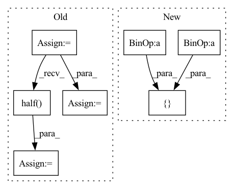

Pattern ID :31955

Before Change
// Extract Y channel hr image data.
hr_image = np.array(hr_image).astype(np.float32)
hr_ycbcr = imgproc.convert_rgb_to_ycbcr(hr_image)
hr_image_y = hr_ycbcr[..., 0]
hr_image_y /= 255.
hr_tensor_y = torch.from_numpy(hr_image_y).to(config.device).unsqueeze(0).unsqueeze(0)
hr_tensor_y = hr_tensor_y.half()
// Only reconstruct the Y channel image data.
with torch.no_grad():
sr_tensor_y = model(lr_tensor_y).clamp_(0.0, 1.0)
After Change
print(f"Processing `{os.path.abspath(hr_image_path)}`...")
// Make low-resolution images.
image = Image.open(hr_image_path).convert("RGB")
image_width = (image.width // config.upscale_factor) * config.upscale_factor
image_height = (image.height // config.upscale_factor) * config.upscale_factor
image = image.resize([image_width, image_height], Image.BICUBIC)
image = image.resize([image.width // config.upscale_factor, image.height // config.upscale_factor], Image.BICUBIC)
image = image.resize([image.width * config.upscale_factor, image.height * config.upscale_factor], Image.BICUBIC)
// Extract Y channel image data.
In pattern: SUPERPATTERN
Frequency: 3
Non-data size: 7
Instances
Fragment ID: 93425937
Project Name: lornatang/vdsr-pytorch
Commit Name: a74f59d38f5d880febe1040548b5865af385e8db
Time: 2021-11-17
Author: liuchangyu1111@gmail.com
File Name: validate.py
M Class Name: AnonimousClass
N Class Name: AnonimousClass
M Method Name: main(0)
N Method Name: main(0)
M Parent Class:
N Parent Class:
M File Name: validate.py
N File Name: validate.py
M Start Line: 53
M End Line: 96
N Start Line: 63
N End Line: 84
'>
Before Change
// Extract Y channel lr image data.
lr_image = np.array(lr_image).astype(np.float32)
lr_ycbcr = imgproc.convert_rgb_to_ycbcr(lr_image)
lr_image_y = lr_ycbcr[..., 0]
lr_image_y /= 255.
lr_tensor_y = torch.from_numpy(lr_image_y).to(config.device).unsqueeze(0).unsqueeze(0)
lr_tensor_y = lr_tensor_y.half()
// Extract Y channel bicubic image data.
bic_image = np.array(bic_image).astype(np.float32)
bic_ycbcr = imgproc.convert_rgb_to_ycbcr(bic_image)
After Change
print(f"Processing `{os.path.abspath(hr_image_path)}`...")
lr_image = Image.open(lr_image_path).convert("RGB")
bic_image = lr_image.resize([int(lr_image.width * config.upscale_factor), int(lr_image.height * config.upscale_factor)], Image.BICUBIC)
hr_image = Image.open(hr_image_path).convert("RGB")
// Extract Y channel lr image data
'>
Fragment ID: 93425921
Project Name: lornatang/espcn-pytorch
Commit Name: 3d7da32ace2da2b908bad2a32243b464f206e72a
Time: 2021-11-30
Author: liuchangyu1111@gmail.com
File Name: validate.py
M Class Name: AnonimousClass
N Class Name: AnonimousClass
M Method Name: main(0)
N Method Name: main(0)
M Parent Class:
N Parent Class:
M File Name: validate.py
N File Name: validate.py
M Start Line: 65
M End Line: 95
N Start Line: 63
N End Line: 88
'>
Before Change
total_files = len(file_names)
for index in range(total_files):
lr_image_path = os.path.join(config.lr_dir, file_names[index])
sr_image_path = os.path.join(config.sr_dir, file_names[index])
hr_image_path = os.path.join(config.hr_dir, file_names[index])
print(f"Processing `{os.path.abspath(hr_image_path)}`...")
// Make low-resolution images.
lr_image = Image.open(lr_image_path).convert("RGB")
hr_image = Image.open(hr_image_path).convert("RGB")
bic_image = lr_image.resize([hr_image.width, hr_image.height], Image.BICUBIC)
// Extract Y channel lr image data.
lr_image = np.array(lr_image).astype(np.float32)
lr_ycbcr = imgproc.convert_rgb_to_ycbcr(lr_image)
lr_image_y = lr_ycbcr[..., 0]
lr_image_y /= 255.
lr_tensor_y = torch.from_numpy(lr_image_y).to(config.device).unsqueeze(0).unsqueeze(0)
lr_tensor_y = lr_tensor_y.half()
// Extract Y channel bicubic image data.
bic_image = np.array(bic_image).astype(np.float32)
bic_ycbcr = imgproc.convert_rgb_to_ycbcr(bic_image)
After Change
hr_image_height = hr_image.height // config.upscale_factor * config.upscale_factor
hr_image = hr_image.resize([hr_image_width, hr_image_height], Image.BICUBIC)
lr_image = hr_image.resize([hr_image.width // config.upscale_factor, hr_image.height // config.upscale_factor], Image.BICUBIC)
bic_image = lr_image.resize([hr_image.width, hr_image.height], Image.BICUBIC)
// Extract Y channel lr image data.
'>
Fragment ID: 93425812
Project Name: lornatang/fsrcnn-pytorch
Commit Name: 5a0ecdd432cc264e98e446689348e5565a84ac1f
Time: 2021-11-19
Author: liuchangyu1111@gmail.com
File Name: validate.py
M Class Name: AnonimousClass
N Class Name: AnonimousClass
M Method Name: main(0)
N Method Name: main(0)
M Parent Class:
N Parent Class:
M File Name: validate.py
N File Name: validate.py
M Start Line: 53
M End Line: 95
N Start Line: 63
N End Line: 98